<section id="manual">
	<div class="container">
		<div class="row">
			<div class="col-lg-12">
				<ol>
					<li><a href="#intro">General Information</a></li>
					<li><a href="#login">First Login</a></li>
					<li><a href="#roster">Roster Management</a></li>
					<ul>
						<li><a href="#add">Adding a Contact</a></li>
						<li><a href="#modify">Modifying a Contact</a></li>
						<li><a href="#delete">Deleting a Contact</a></li>
					</ul>
					<li><a href="#notifications">Notifications</a></li>
					<li><a href="#status">Setting Your Status</a></li>
					<li><a href="#chat">Chatting</a></li>
					<ul>
						<li><a href="#secure">Activating Encryption</a></li>
						<li><a href="#av">Audio/Video Chat</a></li>
					</ul>
				</ol>

				<h2 class="clear"><a name="intro" class="anchor" href="#intro"></a>1. General Information</h2>
				<p>
					<a href="faq.html#xmpp">XMPP</a>, the protocol used by JSXC, identifies every user by a <a href="faq.html#jid">JID</a>. This JID has the same format as an email address: a local part (typically user name) and a domain name, separated by @. The advantage
					of this notation is that organizations providing both email (typically asynchronous) and XMPP (typically synchronous) communication, can provide <strong>both services with one mnemonic ID</strong>. This allows for integrated and unified communication,
					where a single ID can be used for email, instant messaging, and audio/video communications; thus alleviating the need for users to remember multiple IDs, such as (non-mnemonic) telephone numbers, video conference IDs, and so on.
				</p>

				<p>Even though both XMPP and email use the same address format, they are distinct services, not unlike fax, text messages (SMS), and voice telephony using a single `telephone number' format, even though the services differ in what they exchange, the
					protocol, and the typical uses.
				</p>

				<p>Unlike proprietary instant messaging services, XMPP allows anyone operating a domain and a server to provide XMPP service for its users. XMPP was designed from the start to allow these servers to easily interoperate, making it easy for <em>userA@serverA</em>					to communicate with <em>userB@serverB</em>, as if they were on the same server. This federated design enables privacy from the start, there is no central authority which knows what you are doing when and who your friends are. Only servers with a
					need to know (because they host an account for one of your friends) will ever know anything about you; third parties remain ignorant.
				</p>

				<h2 class="clear"><a name="login" class="anchor" href="#login"></a>2. First Login</h2>

				<p>
					For this section, we assume that you are using JSXC with unified login, i.e., logging in to your web application such as SOGo or ownCloud will also log you into your JSXC XMPP Chat.
				</p>

				<p>
					After successful login, the right hand side of your application will show the JSXC bar. During the first login with a browser, the JSXC bar will display that it is creating your security key. After a short while, the display will change to your roster.
					Already during key generation, you can use the main application as before. JSXC functions will only be available after <b>key generation</b> finishes. The key is stored in your browser and not sent to any server.
				</p>
				<p>
					If you would like to use more screen real estate for your application, you can resize or <b>hide</b> the JSXC bar by clicking on the vertical dividing line to the main application. It can be restored by clicking on the right edge of the window. Your
					web browser will remember the bar visibility.
				</p>

				<h2 class="clear"><a name="roster" class="anchor" href="#roster"></a>3. Roster Management</h2>
				<p>
					If you have previously used XMPP for that account, e.g., from another JSXC-enabled application or a native XMPP/Jabber client, your roster, the list appearing in the JSXC bar after the login, will already be populated with the contacts. As with all XMPP
					clients, the roster is stored on the XMPP server, so your contact list will be available to any XMPP client, including JSXC.
				</p>
				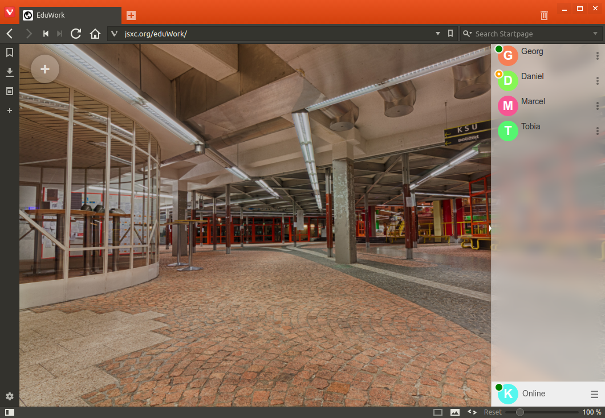

				<h3 class="clear"><a name="add" class="anchor" href="#"></a>Adding a Contact</h3>
				<p>
					To add a contact, click on the <b>gear icon</b> at the bottom right corner and select <b>Add Buddy</b>; then enter the JID (typically the email address) of your buddy, optionally with a (nick) name under which the buddy should be shown in your roster.
					This name is only visible to you; if no full name is given, then the JID will be displayed.
				</p>
				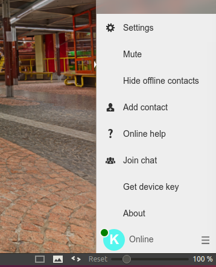
				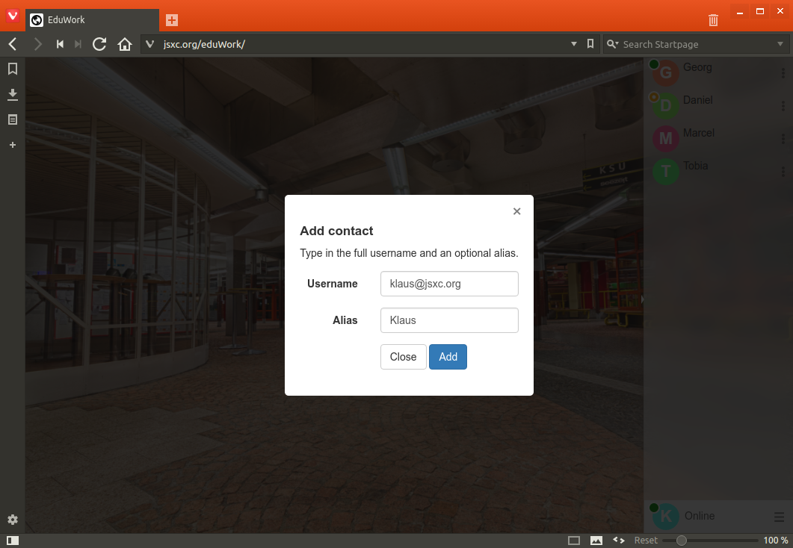
				<p>
					The person you just added will receive a <a href="#notifications">friendship notification</a> in their chat client. If they are offline, this request will wait for them to go online.
				</p>
				<p>
					Once you have a lot of contacts and only want to see those who are online, you can select <b>Hide Offline</b> from the <b>gear icon</b> menu.
				</p>

				<h3><a name="modify" class="anchor" href="#"></a>Modifying a Contact</h3>
				<p>
					When hovering the mouse over a contact, two icons will float in from the right: A pen to edit the name, and a cross to <a href="#delete">delete</a> it. Clicking on the pen icon will make the name editable. Hitting return will change the entry in
					your roster. The name you entered will be active on all your XMPP clients connecting to this account. Other users, including the contact, will not know what you have entered there.
				</p>
				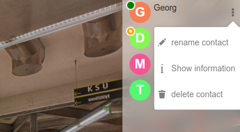
				<p>
					If you empty the nickname, the JID will be displayed. This can also be helpful if you played around with nicknames so much that you confused yourself.
				</p>

				<h3><a name="delete" class="anchor" href="#"></a>Deleting a Contact</h3>
				<p>
					When hovering the mouse over a contact, two icons will float in from the right: A pen to <a href="#modify">edit</a> the name, and a cross to delete it. Clicking on the cross icon will delete the contact from your roster and will revoke their right
					of seeing your online status.
				</p>

				<h2 class="clear"><a name="notifications" class="anchor" href="#notifications"></a>4. Notifications</h2>
				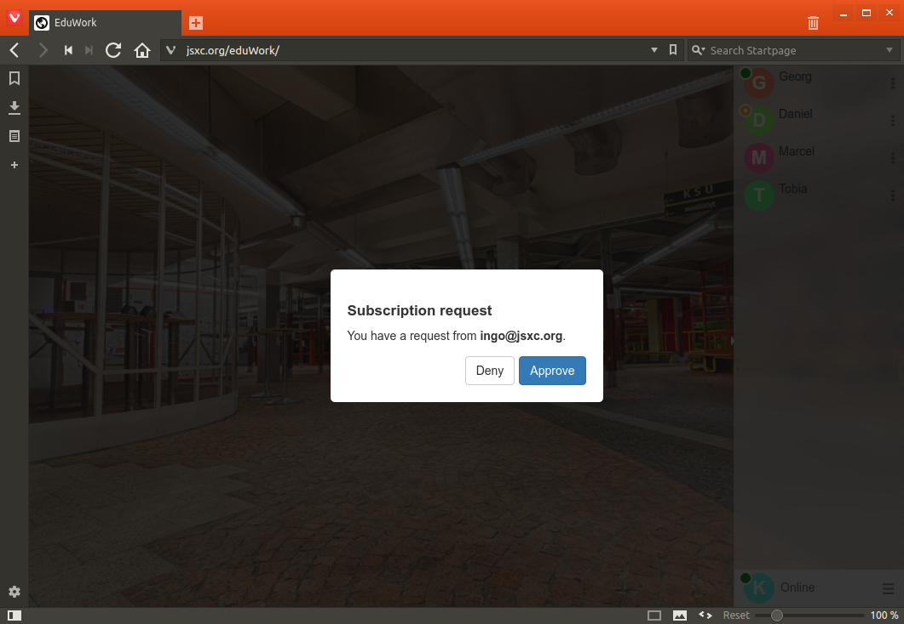
				<p>
					In a chat, several events can happen. For example, someone may <a href="#add">add you to their roster</a> and would like to your presence status and thus be able to see whether you are online. Such events are listed at the bottom right with the pending
					event count on yellow background. Clicking on it reveals the requests, which you can then handle, e.g., deny or accept the friendship request.
				</p>
				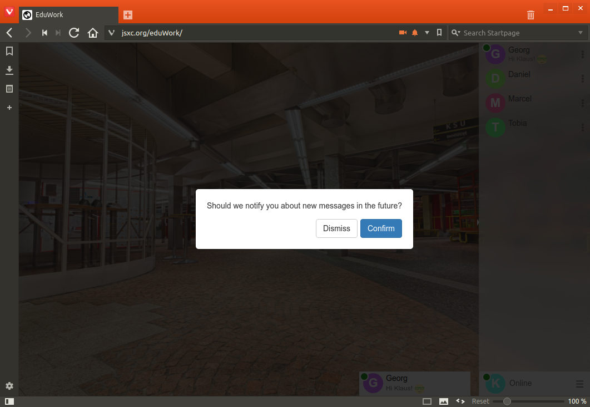
				<p>
					When your chat tab or window is not active, most modern browsers offer the ability to notify you through the operating system's notification facility, often a message appearing in one of the screen corners. This allows you to continue your work while
					being able to immediately respond to incoming requests or messages.
				</p>
				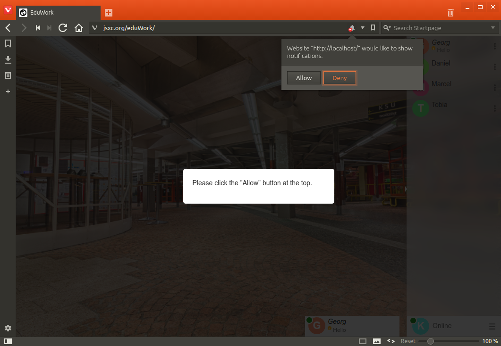
				<p>To prevent abuse, web pages by default do not have the right to pop up notification messages. On the first message JSXC receives while inactive, it will therefore ask you whether it should notify you about background activity at all. If you want this
					to be enabled, the browser wants you to confirm this.
				</p>
				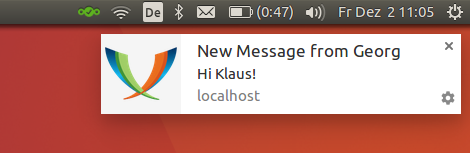

				<h2 class="clear"><a name="status" class="anchor" href="#status"></a>5. Setting Your Status</h2>
				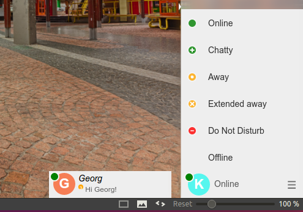
				<p>
					You can tell your contacts whether you are available, e.g. by setting the status to <b>away</b> or <b>do not disturb</b>. Your contacts will see this by the colored bar left of their roster entry for you which will change to yellow or red as a result
					of this.
				</p>

				<h2 class="clear"><a name="chat" class="anchor" href="#chat"></a>6. Chatting</h2>
				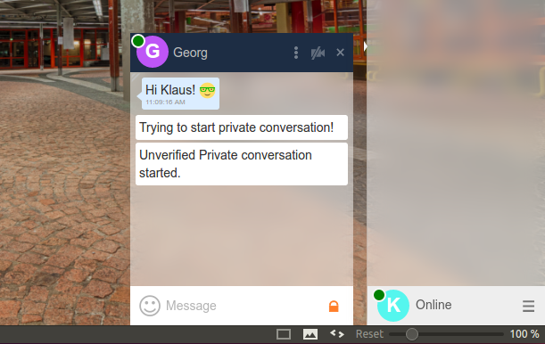
				<p>
					Finally! You know your way around JSXC and can start to chat with your friends or coworkers! Just click on one of your contacts and a chat window will open. Click on another contact, and – yes, a second chat window will open. If they are using up too
					much screen real estate, click at the bottom of a chat window to <b>minimize</b> it or on the X on the top right to close it. The bottom bar of a chat window will flash even when minimized.
				</p>
				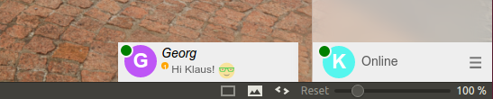
				<p>
					Reopening a chat window will restore the chat history. The <b>chat history</b> is only saved in your browser and can be <b>deleted</b> using the gear icon in the chat window.
				</p>
				<p>
					The actual chat process is straightforward: Type into the <b>…Message</b> input field and hit return; answers will appear in the chat window.
				</p>

				<h3 class="clear"><a name="secure" class="anchor" href="#secure"></a>Activating Encryption</h3>
				<p>
					If your XMPP server is configured correctly, all communication between JSXC and the XMPP server is encrypted. However, if you have contacts on other servers, the communication between those two servers may not always be. Even though every day, encryption
					is activated on more servers, e.g., communication with Google Talk servers is guaranteed to go over the network unencrypted.
				</p>
				<p>
					You are not sure about your system configuration, have something sensitive to discuss, or just want an extra layer of security and privacy? End-to-end encryption of your messages can be added by clicking on the <b>padlock icon</b>. On the first use,
					the padlock will turn <b>orange</b> to indicate that your messages are being sent encrypted.
				</p>
				<p>
					To ensure that the messages are actually encrypted to the correct person, you should <b>authenticate</b> your contact. Using the chat window's gear menu at the top left, you can start authentication.
				</p>
				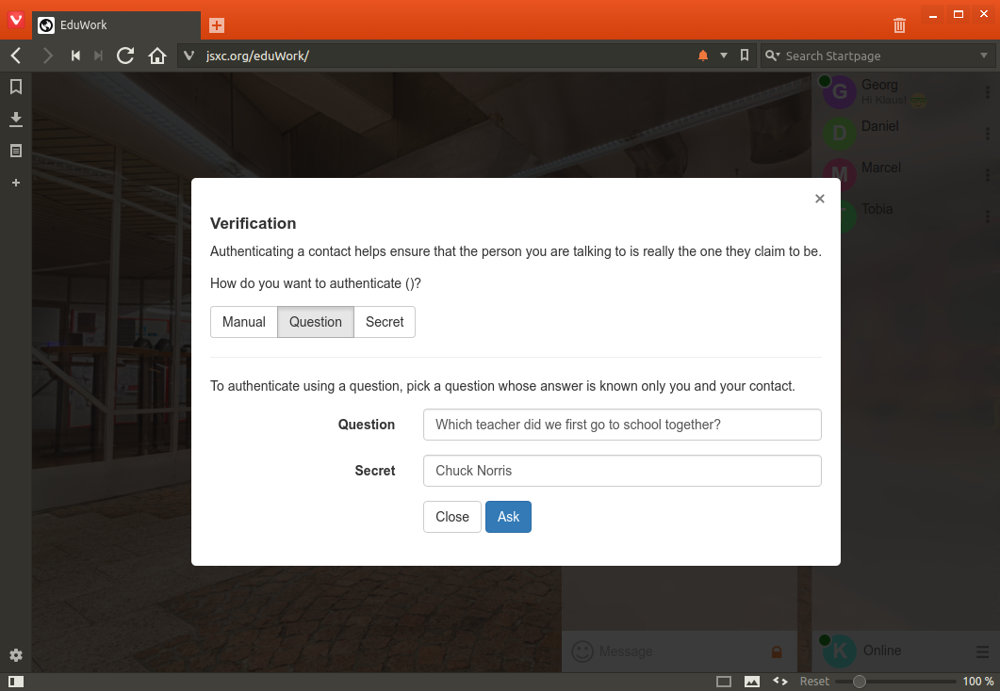
				<p>
					Authentication comes in three flavors:
				</p>
				<ol>
					<li>Manually verifying the fingerprint of both parties' keys</li>
					<li>Providing a question to which only your contact knows the answer</li>
					<li>Entering a secret you agreed on offline</li>
				</ol>
				<p>
					Once authentication has successfully completed, the padlock will turn green, stating that the messages exchanged between the two of you are end-to-end encrypted with nobody eavesdropping in between.
				</p>

				<h3 class="clear"><a name="av" class="anchor" href="#av"></a>Audio/Video Chat</h3>
				<p>
					To start a video chat, click on the camera icon (right of the padlock). A end-to-end encrypted audio and video connection, secured by SRTP, will then be set up to your chat peer. To protect your privacy, the web browser will require confirmation before
					allowing JSXC access to your camera and microphone. Enjoy!
				</p>
				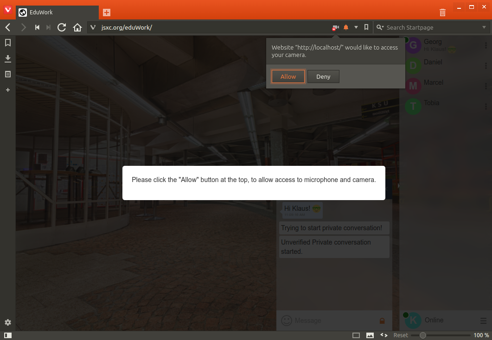
			</div>
		</div>
	</div>
</section>
